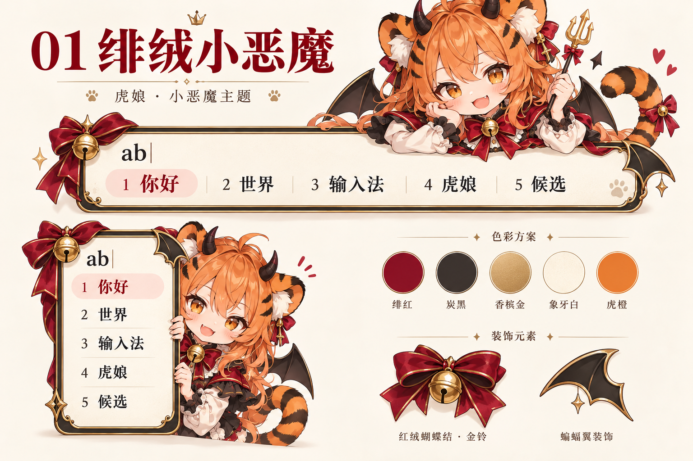
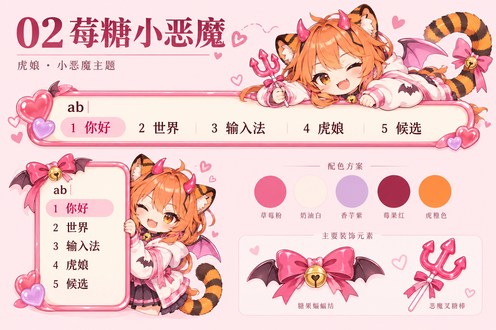
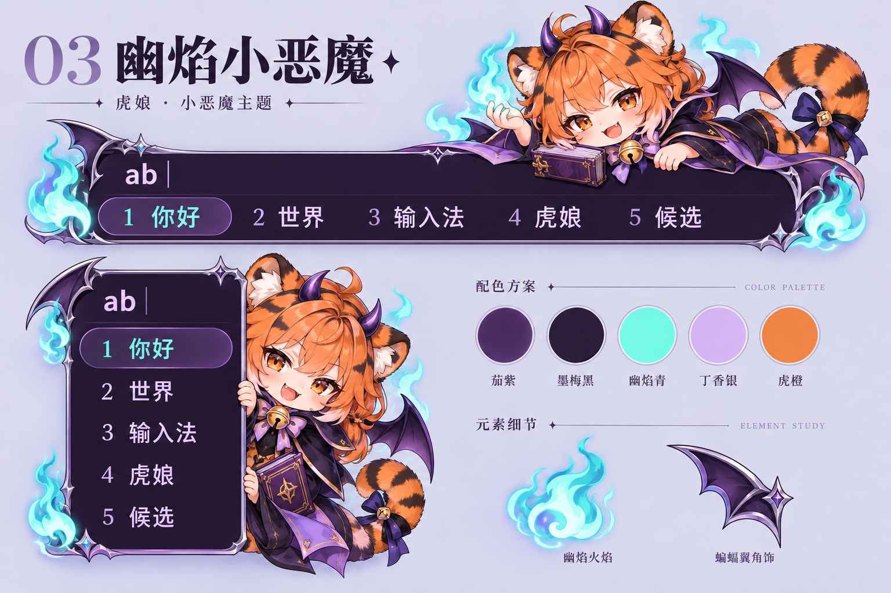

01 绯绒小恶魔
红黑丝绒、香槟金、蝴蝶结铃铛；奶油色候选区，俏皮哥特风。

保存原图 · 1536 × 1024
每款展示横排、竖排候选窗，保留橙发、虎耳、虎尾与铃铛。三款均已制作成可用的 SSF 皮肤。查看实际候选窗与下载。
红黑丝绒、香槟金、蝴蝶结铃铛；奶油色候选区，俏皮哥特风。

保存原图 · 1536 × 1024
莓粉、奶油白、淡紫；软糖小角与蝙蝠结，轻甜恶作剧风。

保存原图 · 1536 × 1024
紫黑、青焰、银白；短披风与魔法书，夜色魔法风。

保存原图 · 1536 × 1024